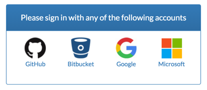
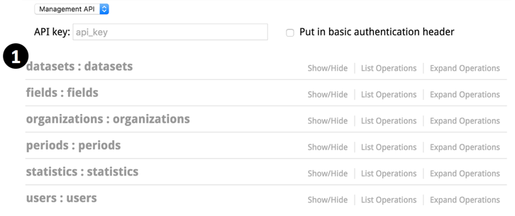
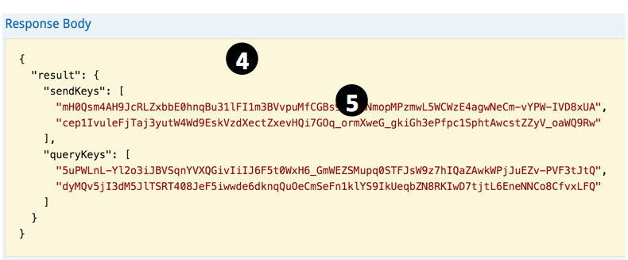
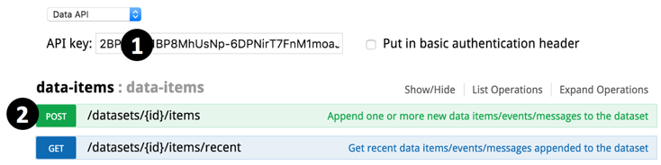
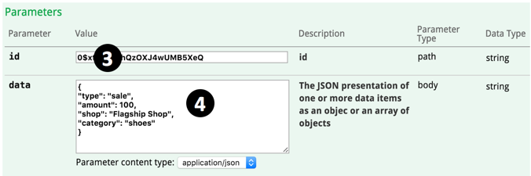

5分钟搞定发送数据
rtstatistics.com是一个基于云的SaaS平台，它可以对海量的数据进行真正实时的收集和统计。而且统计延时小于1秒。详细的产品介绍请参考这里：《真正实时的海量数据统计平台》。数据的发送和统计查询都可以通过基于HTTPS的REST API完成。仅需5分钟，您就可以学会如何向rtstatistics.com发送数据。大体上只需要做这么几件事情：
- 创建一个数据集，并获得新创建数据集的ID和发送秘钥
- 发送数据给这个数据集
- （可选）检查发送的数据是否被成功接收
第一步：打开 https://manage.rtstatistics.com 然后登陆
没注册是吧？不要紧，根本就不需要注册！只要你有这几种账号之中的一个就可以直接登录了：GitHub、BitBucket、Google（也就是你的gmail账号）、Microsoft（也就是你的hotmail或outlook.com账号）。作为一个开发者，十有八九这几个账号你全都有，再怎么不济也会至少有其中一个吧。
在登录界面上会看到这样的选项：

点击其中任何一个图标，浏览器将跳转到所选账号相对应的网站，然后就是用你自己的账号登录并授权rtstatistics.com获取你的基本信息和电子邮件地址。授权操作只在第一次的时候需要。
你的邮件地址将被rtstatistics.com用于把你不同的账号关联起来。例如，如果你用同一个邮件地址注册了Hotmail和Gmail服务，不论你用Hotmail还是Gmail账号登录rtstatistics.com都可以，不会被当作是两个人。这样万一Gmail被404了你还可以用Hotmail账号登录。
接下来浏览器会跳转回到rtstatistics.com，如果是初次登录的话这时候还会需要确认使用协议和隐私条款。最后会来到基于swagger-ui的API控制台。我们以后会做一个更酷的管理控制台界面，但目前所有管理操作还是只能通过swagger-ui或者是直接的API调用。
API有两套：管理API和数据API。你可以在API控制台界面上在这两套API之间进行切换。对于管理API，如果已经登录就不需要提供api_key，如果不登陆的话需要提供api_key做身份认证之用。对于数据API，必须要提供api_key。
如果你是高手的话，可能不屑于为了试用个API还得登录。那样的话你只需要登录一次，把api_key记下来，以后就可以直接打开 https://api.rtstatistics.com/ ，用api_key进行认证。
当然，真正的高手应该会直接写程序或用工具来调用API的。
第二步：创建一个数据集
在能够发送数据之前，必须创建一个用来存放数据的数据集。这可以通过管理API来完成。
- 点击“datasets”以看到所有数据集相关的API

- 点击“POST /datasets”以查看详情

- 在下面找到右方的“Model Schema”，在上面点击一下，其中的样例就会被拷贝到参数输入框里面

-
把其中的“string”改成新数据集的名字，比如说“My Dataset 1”
- 点击“Try it out!”按钮

- 向下滚动以查看服务器返回的结果。你将在返回结果中看到这个新数据集的ID。现在选取并复制该ID，接下来它会被用到。
第三步：得到数据集的API秘钥
调用数据API必须有API秘钥。向数据集发送数据的时候需要用到发送秘钥，查询数据集的统计结果需要用到查询秘钥。数据集的秘钥都是随机生成的长字符串。一旦你怀疑秘钥被泄漏，你可以生成新的秘钥替代掉旧的。
现在你需要找到刚刚创建的数据集的API秘钥。
- 在“datasets”里，点击“GET /datasets/{id}/keys”以查看详情

- 把刚才复制下来的新创建的数据集的ID贴进去作为参数值
- 点击“Try it out!”按钮
- 向下滚动以查看服务器返回的结果。你将在返回结果中看到这个新数据集的所有API秘钥：两个发送秘钥和两个查询秘钥

- 现在选取并复制其中一个发送秘钥，接下来它会被用到
第四步：发送数据
为了方便操作，最好把当前浏览器窗口留作查询用，在一个新窗口中打开 https://api.rtstatistics.com 用来进行数据发送。
现在切换到新打开的发送窗口。
- 把刚才复制的发送秘钥贴进去作为api key

- 展开“data-items” -> “POST /datasets/{id}/items”
- 把数据集的ID贴进去作为“id”参数的值

- 输入任意JSON对象（单条数据，一次发一条）或者JSON数组（其中包含多条数据，一并发送）。比如可以试试这些：
{“type”: “sale”, “amount”: 100, “shop”: “Flagship Shop”, “category”: “shoes”}
或者
[{“location”: “vic-mel-cbd-flinders-192”, “level”: “warn”, “sensor1”: 5, “sensor2”: 300, “sensor3”: 23},
{“location”: “vic-mel-cbd-flinders-193”, “level”: “log”, “sensor1”: 0, “sensor2”: 2, “sensor3”: 0},
{“location”: “vic-mel-cbd-flinders-194”, “level”: “log”, “sensor1”: 2, “sensor2”: 11, “sensor3”: 9}] - 点击“Try it out!”按钮
- 向下滚动以查看服务器返回的结果。你将在返回结果中看到服务器为收到的数据所生成的ID。加入输入的JSON内容有格式错误的话，在返回的结果中会看到错误信息。
第五步：检查数据是不是已被成功接收
发送给任意数据集的最后10条数据是可以被取到的。这对于排查问题会很有帮助。
现在切换回查询窗口。
- 找到“datasets”

- 展开“GET /datasets/{id}/recent”
- 把数据集的ID贴进去作为参数值
- 点击“Try it out!”按钮
- 向下滚动以查看服务器返回的结果。你将在返回结果中看到你刚刚发送的最后10条数据。由于这些数据是作为JSON对象中的字符串值返回的，所以其中的特殊字符（比如引号）是经过了转换的。

在“receivedTime”字段中的数字代表的是UTC时间自从1970年1月1号零时到这条数据被接收时所经过的毫秒数
完成！
现在你已经成功地创建了一个数据集并且向其中发送了数据，是不是很简单？接下来，不妨试试创建一项统计吧，可以参考这里：《5分钟设置好实时统计》。
如有任何的意见或者问题，欢迎发送邮件至：support@rtstatistics.com.